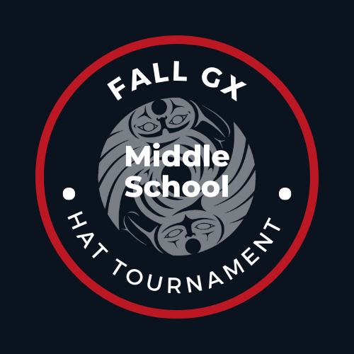
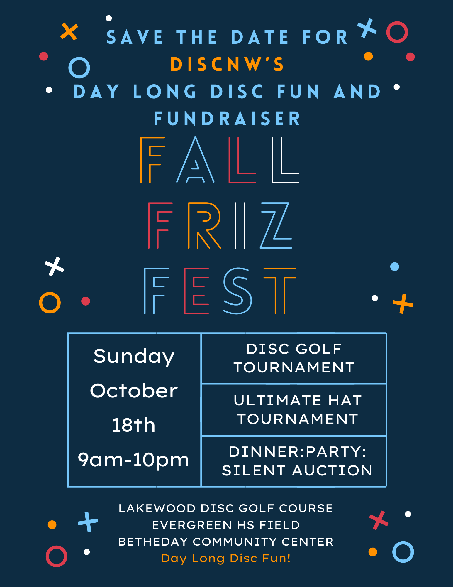
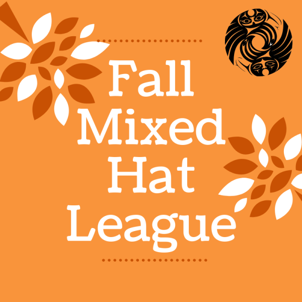
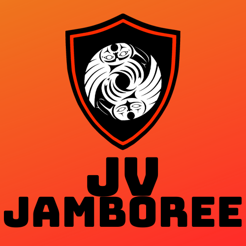
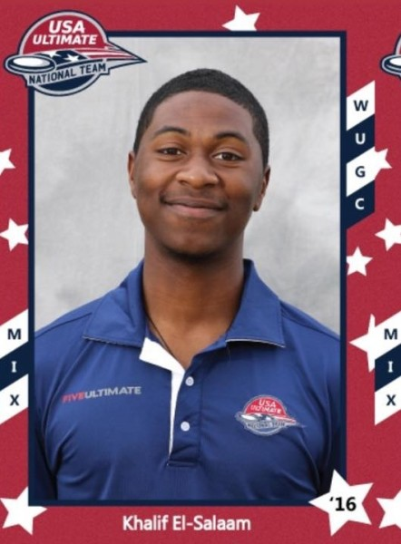
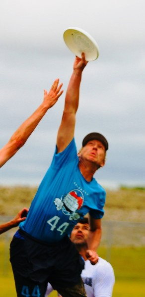

DNW·001 — a pressing for the season
DiscNW The Season Side A
A flying disc and a record are the same shape — flat, and made to spin. So here is one nonprofit's year as an album. Side A is the spring and summer: the tournaments and leagues that fill the long days. Read the season like a tracklist.
Six ways onto the field between the first thaw and the last long evening. Every runtime is a real number from the program — a count, a length, a season.
-
A1

Spring ReignThe world's largest mixed youth ultimate tournament. 90+ teams - A2 SunbreakBorn as Potlatch — the summer tournament DiscNW grew out of. since 1995
-
A3
 Summer Mixed Hat LeagueSign up solo; teams are drawn from a hat.
11 weeks
Summer Mixed Hat LeagueSign up solo; teams are drawn from a hat.
11 weeks
-
A4
 Summer Wonder LeagueAdult ultimate on the long June evenings.
mixed · evenings
Summer Wonder LeagueAdult ultimate on the long June evenings.
mixed · evenings
-
A5
 Summer Youth Ultimate CampsEvery level, no experience needed.
ages 7–18
Summer Youth Ultimate CampsEvery level, no experience needed.
ages 7–18
-
A6
 Sea PlasticThe beach tournament. Cleats come off.
on the sand
Sea PlasticThe beach tournament. Cleats come off.
on the sand
School starts, the fields turn wet, and the game keeps going — down to the off-season, when next year gets drawn up.
-
B1

Fall High School LeaguesWhole seasons on grass that's more often wet than not. full seasons -
B2

Fall Middle School LeaguesSchool teams and hat formats, across the area. every autumn -
B3

JV JamboreeOne big day for newer teams to get real games in. one day -
B4
 DiscNW Coaching CollectiveTraining for the people who coach the rest of it.
off-season
DiscNW Coaching CollectiveTraining for the people who coach the rest of it.
off-season
Who and what is on the record.
Every record has a few lines on the sleeve about the people who made it. This one runs on people too — coaches, captains, and a small staff. Featured on this pressing:

The season doesn't run itself. A small crew lines up the fields, the discs, and the schedules, then gets out of the way so the games can happen.

Most of the people here played first. Some started as kids at a summer camp on Side A and never really left the record.

Every game is self-officiated. No referees. Players make the calls and settle the close ones themselves, under Spirit of the Game.

Produced by the players.
Recorded across the Seattle area since 1995. A nonprofit pressing, with no barrier on the door — an Ultimate community without barriers is the whole idea.
- Players10,000+ a year
- First pressing1995 · Potlatch
- Officiatingself-called · Spirit of the Game
- Sliding scalefees from $33, no questions
- Pressing plantSeattle, WA
- Requests(206) 781-5840
Featured artists & crew
- Erin
- Lili

- Sarah

- Taylor

- Joe

- Matt
- Khalif
- Sheila

- Qxhna

- Chris

- Alan
- Mel
discnw.org, pressed as a record.
A quick look at the homepage in this direction, so the record idea reads as a real site and not just a poster.
- Programs
- Coach
- Volunteer
- Give
- Play →
The Season is on.
Ten thousand players, one game, no barriers. Find your track for the spring and summer.
Drop the needle →


Nº 23 — Side A
The idea
A flying disc and a record are the same shape, and both are made to spin. So the DiscNW year is pressed as an album: Side A is spring and summer, Side B is fall and winter, and the tracklist is the real tournaments and leagues — each runtime a real stat.
Signature
A real 12-inch record as the hero: CSS grooves, a rotating reflection, the DiscNW mark on the label, and a tonearm resting in the groove. It turns slowly and freezes cleanly for reduced motion. A Side A / Side B toggle flips the label and the now-playing readout.
Palette — warm analog sleeve
#141A17
Bone sleeve #F0E9D6
Brass foil #C8922E
Oxblood (Side A) #8E2C3B
Pine-teal (Side B) #2E6E63
Type
Fraunces italic at a high optical size for the album title and side letters — warm and characterful. Hanken Grotesk for body. JetBrains Mono for track numbers, runtimes, and the catalog details.
Photography
Every photo renders clean. The analog texture — grooves, foil, sleeve — lives only on the chrome. No headshot or action shot ever carries a tint, blend, grain, or overlay. Real faces sit in plain bone or ink frames.
Motion
The record turns; the needle drops on load; sections and rows rise as you scroll. Turn motion off and the page is already the finished pressing — a still record, tonearm down, both sides legible.
Choose this if
You want the calendar to feel like a thing you'd keep — warm, physical, and easy to scan as a tracklist. It suits a big seasonal push, a print poster, or a fundraiser where the season is the product.
Think twice if
You need dense program-first wayfinding above the fold, or the record metaphor feels off-brand for a given audience. The concept is strongest as a landing moment, less so as an everyday dashboard.